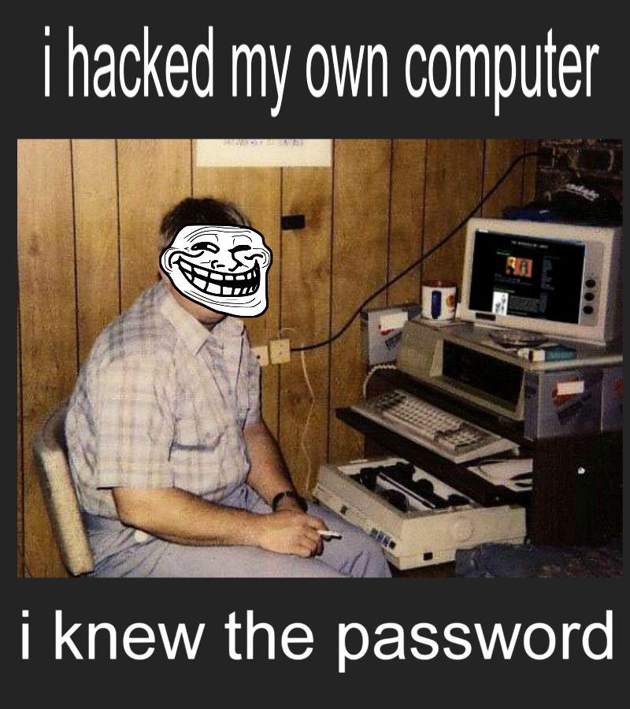

Berdiri sejak tahun 2026, OverGlazer berawal dari sebuah kesabaran mendalam terhadap kenaikan harga GPU & CPU di era AI. Kami ingin setiap orang mampu membeli PC yang bertenaga, dan berkualitas.
Kami bukan sekadar toko komputer biasa. Kami adalah team yang mendedikasikan diri untuk membuat rakitan PC yang berkualitas dan sesuai kebutuhan customer kami (Customer adalah Raja), Kami juga memastikan bahwa setiap komponen yang terpasang sesuai dengan spesifikasi yang dibutuhkan customer kami dan juga sesuai dengan budget yang telah ditentukan.
Visi Kami
Menjadi toko yg terpercaya di Indonesia untuk mendefinisikan ulang standar kualitas rakitan PC profesional dan terjangkau.
Misi Kami
Memberikan edukasi komponen PC terbaik, dan hasil rakitan yang tidak hanya kencang tapi juga merupakan karya seni.